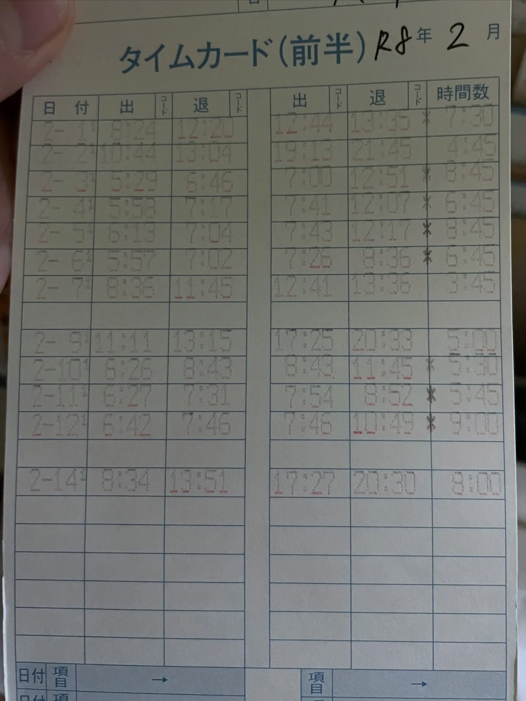
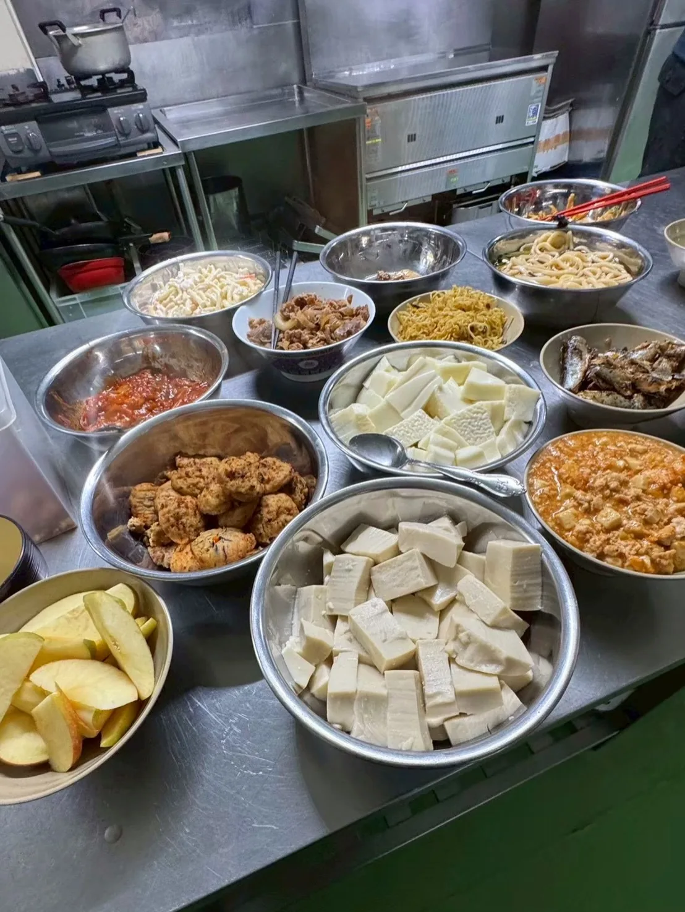
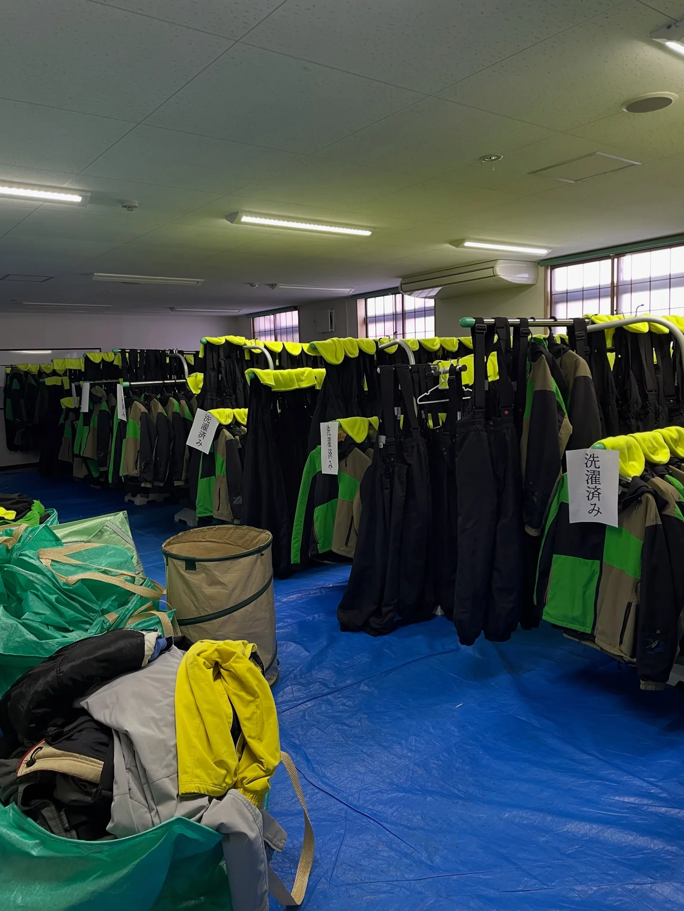
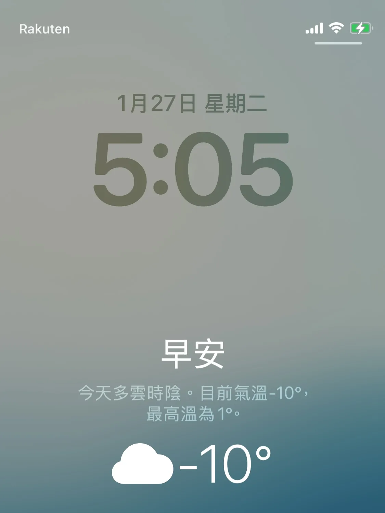
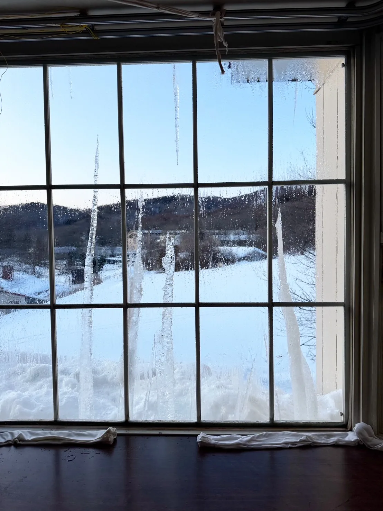
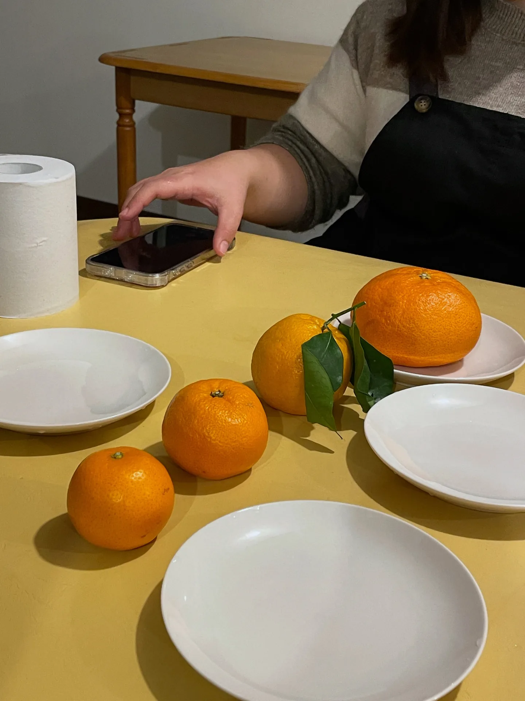

雪場旅館打工：長野菅平高原的雪國生活
為期一年的打工度假，終於迎來我第一個也是唯一一個真正的打工！
想在有雪的地方度過冬天
「在有雪的地方度過冬天、去可以滑雪的地方學滑雪」是我打工度假唯一的心願。日文能力有限（以工作需求的標準來說，其實屬於不會講日文）的情況下，雖然一度想去北海道，但請代辦協助聯繫期間，覺得等面試、等回覆太焦慮太麻煩了，於是球來就打（？）了。
菅平高原的旅館
打工的旅館位於長野的菅平高原，海拔約 1,300 公尺，從上田車站要搭一小時的公車，遊客以日本人為主，冬天是滑雪勝地，夏天則是體育集訓的聖地，有不少運動場設施（冬天時都被雪蓋住了）。
工作的旅館最多可以容納三百多人，主力客人是學生團體，因此忙碌時真的可以爆炸忙。如我一般的冬季限定打工仔將近 20 人，以泰國人為多數，其次是印尼人，台灣人是最少的三個人。除了零星阿紮事件外，大家都還滿尊重包容友善愛的，還一起吃了跨年聚餐。

在旅館裡看到的日本
在工作當中，可以觀察到不同學校的管理風格以及與學生的互動風格。比如有學校 morning call 會有女老師的歌聲，或者目睹了男老師大聲咆嘯、痛罵學生罵到哭的教育現場，非常有趣！還有遇到男校團體，理著平頭、硬漢感十足的高中生，在擁擠的自助餐排隊時不吵不鬧，拿餐點時非常紳士地讓給後一位女孩。很幸運能從一個不同以往的角度，窺見日本文化的一小角。
排班與作息
工作是排班，大致可分為早餐、客房清掃（＋午餐）、晚餐三個時段，早上約 5～6 點上班、晚上約 8–9 點下班，有時因早起下午會睡午覺。明明每天也只是工作 6～8 小時，卻覺得過得挺渾渾噩噩的，每天剩餘的時間好像耍個廢就沒了……似乎是我太久沒上每日朝九晚五的班，才會忘了這種感覺 XD


餐廳 vs. 客房清掃
我比較喜歡在餐廳工作，像是在玩經營遊戲一樣，補餐點、清潔自助吧桌面、收餐盤等等，而相對不喜歡做客房打掃。主要是打掃標準，距離我的最低標準實在太～遙遠了～～也是因為接觸了這個工作，讓我從此以後失去對人類（旅館清潔）的信任，常常抱怨「擦比不擦更髒」、「不要相信任何人」。
整體而言，就像一般的工作一樣，有趣與痛苦總是並存的，體驗過也才知道箇中滋味。

雪國的冬天：身體的反應
這裡的冬天溫度大約在 −10～0 度之間，沒有想像中冷，至少把所有衣服都穿上就大致上不冷了，甚至我滿少帶毛帽的。雖然不覺得很冷，但在前一個半月鼻水總是帶血，頭皮疑似因為乾燥而有頭皮屑問題，手背關節處因為太乾燥而兩三次流血，腳跟也生平第一次出現龜裂，還在抵達的第二個星期感冒了。除此之外，一切良好，甚至沒有在雪地滑倒過！（這應該值得驕傲一下吧！！）

雪帶來的日常
雪帶來了截然不同的日常，比如走路上班的 7 分鐘路程可以變成 15 分鐘；比如宿舍前超過 20 公尺的車道積雪，得集結數人花個 30 分鐘剷雪；比如宿舍房間的窗台是現成的冰箱，天氣冷時窗框會結一層冰、開不了窗，天暖時則要清理檯面上小湖般的融水；比如房裡需要開著暖氣才能活，然而電暖器有個「8 小時會自動關機」的安全裝置，好幾次睡前忘了重開，在睡夢中被冷醒；比如還不會滑雪時覺得大雪很煩人，會滑雪時覺得「請再多下一點雪！」。

雪的各種樣子，與冰錐
雪的樣態有很多種，剛下過的綿綿冰一般的軟綿綿，過了一兩天的好天氣，表面的雪開始融化，在陽光下閃閃發亮，變得容易黏在一起，是滾雪球、堆雪人的絕佳狀態。再融一些，會像傳統剉冰的大顆粒透明冰晶感，再接著是一整片冰塊般的光滑表面，是我最討厭的時刻，左跳右跳、左閃右閃，尋找著其他更安全的落腳點，讓上班的路程又更花時間了。

持續雪融的日子，屋簷也會產生許多冰錐，尋找安全且低矮方便的位置採收（？）又大又長的冰錐，並將冰錐插在房間的窗外（？）是我的日常樂趣。也曾遇過遊客採收了超巨大的冰錐（對方還指示我是在哪裡採收的），顯示採收冰錐並不奇怪！我不孤單！XD

宿舍裡的同鄉：ピン
位於遠得要命的山中，宿舍裡來自幾個不同國家的打工仔，和本國人混在一起、混得特別密切像是一種必然。ピン是我的室友，這裡是她打工度假的第一站，像哆啦 A 夢一樣帶了許多生活用品和台灣零食，確保了生活品質，救了我這個沒帶吹風機也沒帶衣架的人。我們個性迥異但一見如故，同鄉而且同樣喜歡做菜，還有同室生活、一起工作、互吐苦水、撿拾廢物再利用（？）的加持，相處良好。


晚幾週出現的リュウ
另一個台灣人リュウ 晚了幾週才出現，是個尚未受社會荼毒、把握青春出來打工度假的男生，興許是家中上有姐姐下有妹妹，是個相處起來很舒服的人，偶爾還是有顯得男孩（屁孩）、讓人想翻白眼的時候。（也是後期的專業冰錐採收手 XD）
而變熟的契機應該是工作空檔閒聊間發現他有電飯鍋開始的，接著發現他會滑雪，於是一起在休日搭伙吃飯、滑雪、外出旅遊，在無聊的日子裡，和ピン侵門踏戶地待在リュウ 的單人大房間一起找著樂子。（不僅房間比較大，連燈都比較亮！）


珍貴而美好的時光
這是一段珍貴而美好的時光。不短的三個半月，沒得選擇、只能跟眼前的人交朋友的三個台灣人卻能融洽相處，我們認真工作賺錢也認真玩耍，生活單純平凡、快樂很容易，顯得有些天真。很感恩能有機會還這麼天真。
延伸閱讀：〈日本打工度假的一年：出發前的準備、支出花費，和不打工的生活方式〉（2026-08-31）
關鍵字長野上田菅平高原打工度假雪場打工旅館打工雪國生活滑雪場
留言
電子郵件不會公開，只用來辨識留言者。第一次留言會先經過審核，之後同一個電子郵件的留言會直接顯示。本留言區以 Cloudflare Turnstile 防止垃圾留言。